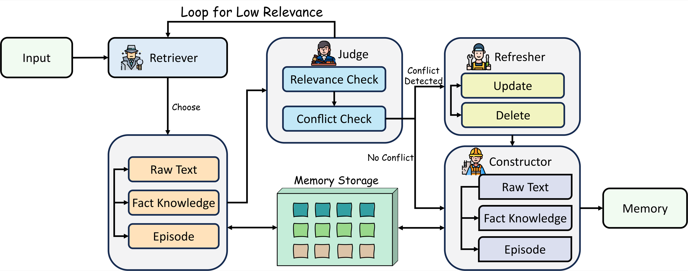
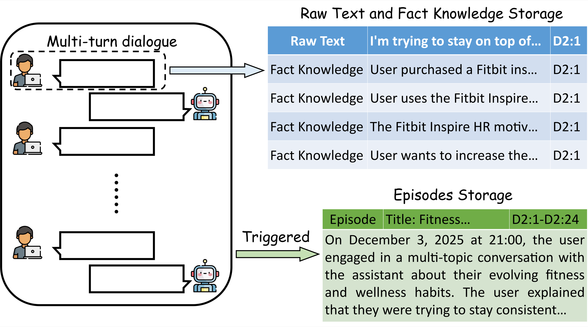
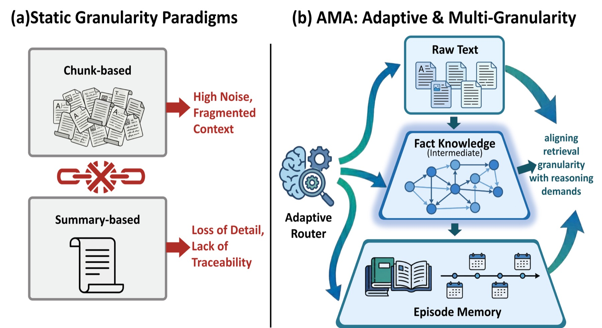
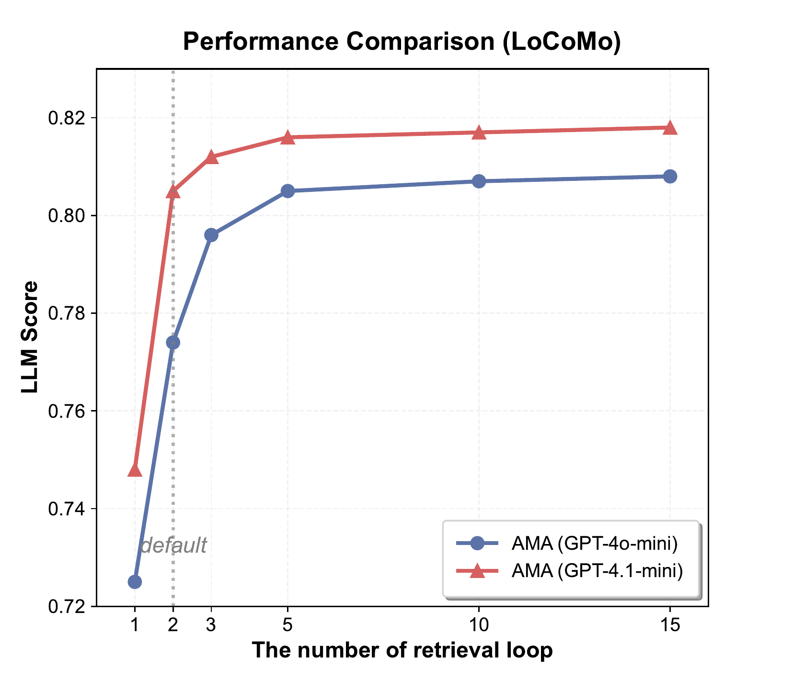
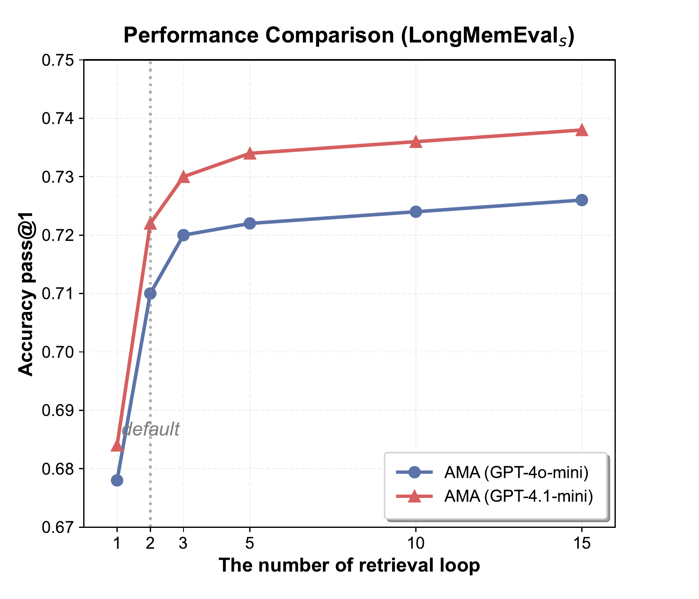
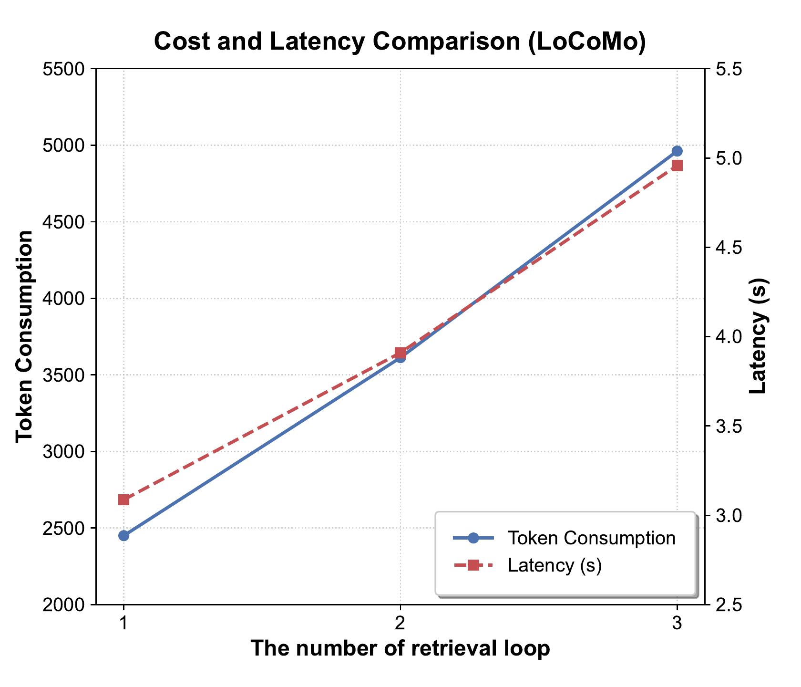
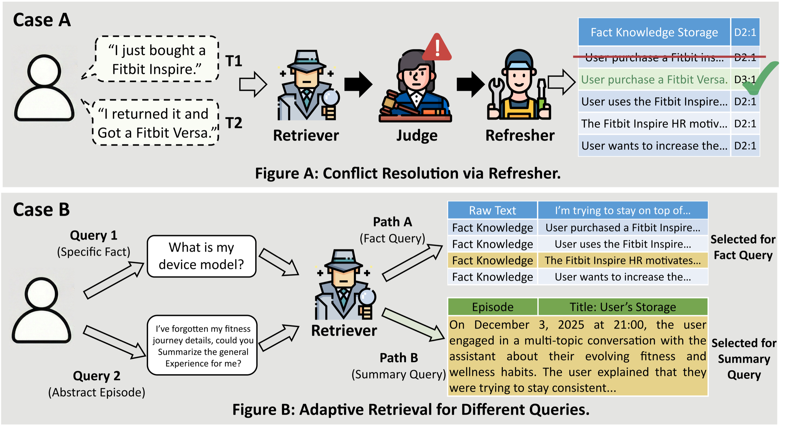

Research reference code
The paper implementation, evaluation entry points, figures, and reproduction guidance for studying AMA.
AMA coordinates four specialized agents to construct, retrieve, verify, and refresh long-term memory—aligning the granularity of evidence with the reasoning task at hand.
The paper implementation, evaluation entry points, figures, and reproduction guidance for studying AMA.
An AMA-based memory layer for OpenClaw and Harness Agent-style architectures, with automatic recall and capture.
Fine details, stable facts, and high-level episodes demand different representations. As user information changes, a useful system must detect conflicts and repair stale knowledge—not merely append more context.

Rewrites ambiguous queries and routes each intent to raw text, fact knowledge, or episode memory.
Audits relevance and consistency, triggering bounded retrieval feedback when evidence is insufficient.
Resolves logical conflicts through targeted updates or deletions, preserving knowledge over time.
Transforms validated dialogue into traceable raw turns, atomic facts, and event-level episodes.
The Constructor preserves exact turns as raw text, distills reusable facts, and synthesizes cross-turn episodes. Episodes are created when the topic shifts, the user explicitly asks to consolidate, or context becomes saturated.

AMA stores dialogue at multiple levels and selects a representation according to current reasoning intent.

Overall LLM score, compared with 0.740 for the strongest listed memory baseline.
Average accuracy across six question types, compared with 0.642 for Nemori.
Accuracy on questions that require the system to follow evolving user information.
Input tokens versus 18,625 for FullContext in the efficiency analysis.
*3,613 tokens is approximately 19% of the 18,625-token FullContext input reported in the paper.
AMA is evaluated on LoCoMo (1,540 questions over long multi-session conversations) and LongMemEvals (500 questions with approximately 115K-token histories). Temperature is 0, retrieval uses top-k 10, and AMA defaults to at most two retrieval rounds.
| Backbone | FullContext | Nemori | AMA |
|---|---|---|---|
| GPT-4o-mini | 0.717 | 0.740 | 0.774 |
| GPT-4.1-mini | 0.786 | 0.774 | 0.805 |
| Qwen3-30B-Instruct | 0.733 | 0.756 | 0.791 |
| Qwen3-8B-Instruct | 0.696 | 0.686 | 0.707 |
| Question type | FullContext | Zep | Nemori | AMA |
|---|---|---|---|---|
| Single-session preference | 0.300 | 0.533 | 0.467 | 0.467 |
| Single-session assistant | 0.818 | 0.750 | 0.839 | 0.964 |
| Temporal reasoning | 0.365 | 0.541 | 0.617 | 0.444 |
| Multi-session | 0.406 | 0.474 | 0.511 | 0.624 |
| Knowledge update | 0.769 | 0.744 | 0.615 | 0.897 |
| Single-session user | 0.814 | 0.929 | 0.886 | 0.986 |
| Average | 0.548 | 0.632 | 0.642 | 0.698 |
AMA leads the average and excels on assistant-side, multi-session, knowledge-update, and user-specific questions. Temporal reasoning remains an important opportunity for future work.
Most of the performance gain arrives in the first few retrieval rounds and then saturates, while token use and latency continue to grow approximately linearly. AMA therefore uses Kr = 2 as its default balance.



| Method | Tokens | Latency | Score |
|---|---|---|---|
| FullContext | 18,625 | 7.206 s | 0.717 |
| RAG | 5,800 | 2.983 s | 0.300 |
| Nemori | 2,925 | 3.152 s | 0.740 |
| AMA (Kr=1) | 2,491 | 3.124 s | 0.723 |
| AMA (Kr=2) | 3,613 | 3.910 s | 0.774 |
| Memory setting | LoCoMo | Knowledge update |
|---|---|---|
| Raw text only | 0.669 | 0.767 |
| Fact knowledge only | 0.712 | 0.804 |
| Episode memory only | 0.688 | 0.748 |
| All granularities, no Refresher | 0.771 | 0.568 |
| Full AMA | 0.774 | 0.897 |
Multi-granular memory gives broad coverage; the Refresher is especially important when user information changes.
Conflict-aware refresh. When device information changes, the Retriever recalls the earlier fact, the Judge identifies the conflict, and the Refresher updates the stale memory instead of keeping contradictory records.
Intent-aware granularity. A factual query routes to Fact Knowledge; an abstract summary query retrieves Episode Memory.

The same repository also turns the research design into a usable memory layer for OpenClaw and Harness Agent-style systems: an agent-facing skill, automatic recall and capture hooks, six explicit tools, and a local Python sidecar backed by SQLite and FAISS.
Two distinct deliverables: the Python research code serves as a reference implementation of the paper; the TypeScript plugin and skill package the design for agent runtimes. They share the AMA concepts but can be explored independently.
$ git clone https://github.com/Sherlockwz/AMA.git
$ cd AMA && ./scripts/setup.sh
$ openclaw plugins install --link .
$ openclaw ama doctorama_retrievesemantic recallama_process_turnmemory lifecycleama_process_assistantresponse captureama_memory_listmemory statisticsama_session_endepisode synthesisama_memory_forgetuser-controlled deletionWeiquan Huang, Zixuan Wang, Hehai Lin, Sudong Wang, Bo Xu, Qian Li, Beier Zhu, Linyi Yang, and Chengwei Qin. 2026.
AMA: Adaptive Memory via Multi-Agent Collaboration.
Findings of the Association for Computational Linguistics: ACL 2026, pages 3099–3120.